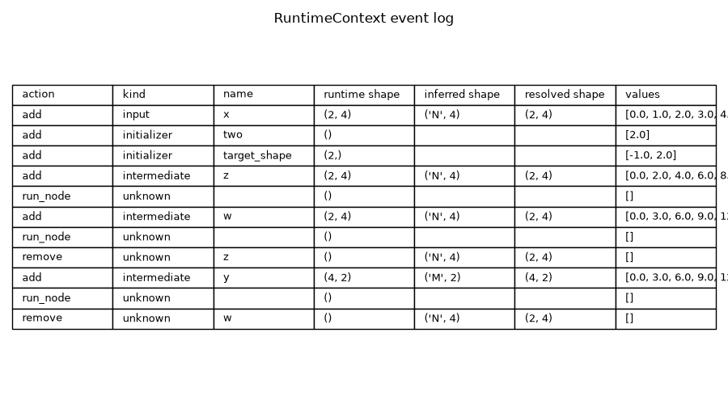
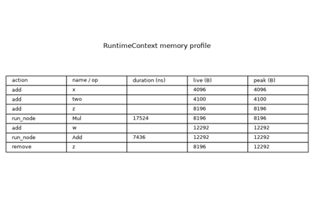
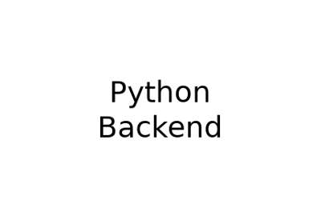

Note
Go to the end to download the full example code.
Run a model with the runtime and inspect intermediate results#
onnx_light ships a C++ kernel dispatcher exposed in Python
through ReferenceEvaluator. After each
run() call the evaluator
retains the RuntimeContext used internally; calling
events() returns an
append-only log of every tensor map mutation: graph initializers
seeded on entry, inputs injected by the caller, intermediate values
produced by each node kernel and outputs propagated back to the caller.
This example:
builds a small graph with a symbolic batch dimension
N, an initializer and three operators (Mul,AddthenReshape) so that one of the intermediate tensors has a shape expressed as an arithmetic expression ofN(here2*N),runs
infer_shapes_model()on it so the expected shape of each intermediate tensor is recorded ingraph.value_info,uses
evaluate_expression()to resolve each symbolic dimension to a concrete integer given the actual batch size at runtime,drives the runtime through
ReferenceEvaluatorwhile collecting the event log, withrelease_intermediates=Trueso the runtime drops every intermediate tensor as soon as its last consumer has run,prints the events, illustrating how to peek at intermediate results without re-instrumenting the graph,
isolates the
"remove"events to show exactly when each intermediate tensor is released from the runtime tensor map,cross-checks the runtime-observed shape of every intermediate tensor against the statically inferred (and expression-evaluated) shape,
renders a compact table of the recorded events for visual inspection.
from __future__ import annotations
import numpy as np
from onnx_light.onnx_lib import parser
from onnx_light.onnx_core.expressions import evaluate_expression
from onnx_light.onnx_core.shape_inference import infer_shapes_model
from onnx_light.onnx.reference import ReferenceEvaluator
from onnx_light.tools import pretty_onnx
Build a small ONNX model#
The graph multiplies its input by an initializer two, adds
the original input back and finally reshapes the result to a
2-column matrix using a -1 placeholder. The intermediate
tensors we expect to see in the event log are z = x * two,
w = z + x and y = Reshape(w, [-1, 2]). Because the input
has the symbolic batch dimension N, shape inference resolves
the -1 placeholder of Reshape to the arithmetic
expression 2*N (input has N * 4 elements, divided by the
fixed inner dimension 2).
model = parser.parse_model(
'<ir_version: 10, opset_import: ["" : 18]>'
"agraph (float[N,4] x) => (float[M,2] y) "
"<float two = {2.0}, int64[2] target_shape = {-1, 2}>"
"{"
" z = Mul(x, two)"
" w = Add(z, x)"
" y = Reshape(w, target_shape)"
"}"
)
print(pretty_onnx(model))
opset: domain='' version=18
graph: name='agraph'
input: float[N,4] x
init: float[] two
init: int64[2] target_shape
0: Mul(x, two) -> z
1: Add(z, x) -> w
2: Reshape(w, target_shape) -> y
output: float[M,2] y
Infer the shapes of every intermediate tensor#
infer_shapes_model() walks the graph in topological order,
applies the shape-inference rule registered for each operator and
writes the inferred element type and shape of every intermediate
tensor to graph.value_info. For symbolic dimensions the
inferred shape can contain arithmetic expressions over the input
parameters (e.g. 2*N for the Reshape output where the
-1 placeholder resolves to (N * 4) // 2).
infer_shapes_model(model)
def shape_of(type_proto):
return tuple(
d.dim_param if d.dim_param else int(d.dim_value) for d in type_proto.tensor_type.shape.dim
)
inferred_shapes = {vi.name: shape_of(vi.type) for vi in model.graph.value_info}
for inp in model.graph.input:
inferred_shapes[inp.name] = shape_of(inp.type)
for out in model.graph.output:
inferred_shapes[out.name] = shape_of(out.type)
print("Statically inferred shapes (may contain symbolic dimensions):")
for name, shape in inferred_shapes.items():
print(f" {name:<6s} -> {shape}")
Statically inferred shapes (may contain symbolic dimensions):
w -> ('N', 4)
z -> ('N', 4)
x -> ('N', 4)
y -> ('M', 2)
Resolve symbolic dimensions with evaluate_expression#
Once the actual input shape is known, we can resolve every
symbolic dimension by binding the input parameters to integers
and feeding the resulting context to
evaluate_expression().
It supports the arithmetic expressions produced by shape
inference (+, -, *, //, %, CeilToInt …)
as well as plain integer literals and variable references.
x = np.arange(8, dtype=np.float32).reshape(2, 4)
# ``M`` is the user-declared output dim; shape inference anchors it to
# the Reshape result ``2*N``, so it must be bound alongside ``N`` here.
context = {"N": int(x.shape[0]), "M": 2 * int(x.shape[0])}
print(f"Symbol context: {context}")
def resolve_shape(shape, context):
resolved = []
for d in shape:
if isinstance(d, int):
resolved.append(d)
else:
resolved.append(evaluate_expression(d, context))
return tuple(resolved)
resolved_shapes = {name: resolve_shape(shape, context) for name, shape in inferred_shapes.items()}
print("Shapes after evaluate_expression:")
for name, shape in resolved_shapes.items():
print(f" {name:<6s} -> {shape}")
Symbol context: {'N': 2, 'M': 4}
Shapes after evaluate_expression:
w -> (2, 4)
z -> (2, 4)
x -> (2, 4)
y -> (4, 2)
Run the model with ReferenceEvaluator#
ReferenceEvaluator wraps the C++ kernel
dispatcher and handles all input/output conversions automatically.
After run() returns,
events() exposes the full
event log recorded by the internal RuntimeContext.
release_intermediates=True asks the runtime to drop every
intermediate tensor as soon as its last consumer node has run. Each
removal is recorded as a "remove" event, so the log captures not
only when a value is produced but also when it is freed.
y =
[[ 0. 3.]
[ 6. 9.]
[12. 15.]
[18. 21.]]
Inspect the event log#
events() returns a list of
RuntimeEvent entries. Each event carries the
action ("add" / "replace" / "remove"), the
kind of value ("input", "initializer",
"intermediate" or "output"), the tensor name,
data_type, shape, the number of element values captured
(value_count) and the first few element values themselves.
Each event stores at most a fixed number of element values
(currently 8) from the recorded tensor. Tensors with more
elements are summarised: data_type is set to -1 and
shape is left empty to signal the truncated payload. The
total number of events in the log itself is unbounded.
Recorded 11 event(s):
[add input ] x dtype=1 shape=[2, 4] values=[0.0, 1.0, 2.0, 3.0, 4.0, 5.0, 6.0, 7.0]
[add initializer ] two dtype=1 shape=[] values=[2.0]
[add initializer ] target_shape dtype=7 shape=[2] values=[-1.0, 2.0]
[add intermediate] z dtype=1 shape=[2, 4] values=[0.0, 2.0, 4.0, 6.0, 8.0, 10.0, 12.0, 14.0]
[run_node unknown ] dtype=0 shape=[] values=[]
[add intermediate] w dtype=1 shape=[2, 4] values=[0.0, 3.0, 6.0, 9.0, 12.0, 15.0, 18.0, 21.0]
[run_node unknown ] dtype=0 shape=[] values=[]
[remove unknown ] z dtype=0 shape=[] values=[]
[add intermediate] y dtype=1 shape=[4, 2] values=[0.0, 3.0, 6.0, 9.0, 12.0, 15.0, 18.0, 21.0]
[run_node unknown ] dtype=0 shape=[] values=[]
[remove unknown ] w dtype=0 shape=[] values=[]
Watch intermediate results being removed#
Because the evaluator was created with
release_intermediates=True, the runtime frees each intermediate
tensor as soon as its last consumer node has executed. Every such
release is logged as a "remove" event. Filtering the log by
action == "remove" therefore shows precisely when each
intermediate value leaves the runtime tensor map — here z is
removed right after Add consumes it and w right after
Reshape consumes it, while the graph output y is preserved.
Recorded 2 removal event(s):
z (unknown) released from the runtime tensor map
w (unknown) released from the runtime tensor map
Cross-check intermediate shapes#
Filtering the event log by kind is the easiest way to recover
only the values produced by node kernels — i.e. the intermediate
tensors of the graph. For each one we compare the runtime-observed
shape against the shape infer_shapes_model() had pre-computed.
print("Intermediate tensors produced by node kernels:")
for ev in events:
d = ev.as_dict()
if d["kind"] != "intermediate":
continue
runtime_shape = tuple(d["shape"])
inferred = inferred_shapes.get(d["name"])
resolved = resolved_shapes.get(d["name"])
match = "OK" if resolved == runtime_shape else "MISMATCH"
print(
f" {d['name']:<8s} runtime={runtime_shape} inferred={inferred} "
f"resolved={resolved} [{match}] values={d.get('values')}"
)
Intermediate tensors produced by node kernels:
z runtime=(2, 4) inferred=('N', 4) resolved=(2, 4) [OK] values=[0.0, 2.0, 4.0, 6.0, 8.0, 10.0, 12.0, 14.0]
w runtime=(2, 4) inferred=('N', 4) resolved=(2, 4) [OK] values=[0.0, 3.0, 6.0, 9.0, 12.0, 15.0, 18.0, 21.0]
y runtime=(4, 2) inferred=('M', 2) resolved=(4, 2) [OK] values=[0.0, 3.0, 6.0, 9.0, 12.0, 15.0, 18.0, 21.0]
Render the event log as a table#
A simple matplotlib figure is used both as the sphinx-gallery thumbnail and as a compact visual recap of the captured events. The last column shows the statically inferred shape so it can be read alongside the runtime-observed shape.
import matplotlib.pyplot as plt # noqa: E402
rows = []
for ev in events:
d = ev.as_dict()
values = d.get("values") or d.get("string_values") or []
rows.append(
[
d["action"],
d["kind"],
d["name"],
str(tuple(d["shape"])),
str(inferred_shapes.get(d["name"], "")),
str(resolved_shapes.get(d["name"], "")),
str(values),
]
)
fig, ax = plt.subplots(figsize=(9, 1.6 + 0.3 * len(rows)))
ax.set_axis_off()
table = ax.table(
cellText=rows,
colLabels=[
"action",
"kind",
"name",
"runtime shape",
"inferred shape",
"resolved shape",
"values",
],
loc="center",
cellLoc="left",
colLoc="left",
)
table.auto_set_font_size(False)
table.set_fontsize(9)
table.scale(1.0, 1.3)
ax.set_title("RuntimeContext event log")
fig.tight_layout()

Total running time of the script: (0 minutes 0.235 seconds)
Related examples

Profile the runtime memory of a model with the event log

Run an ONNX model casting a float tensor into an int2 tensor

Retrieve a backend test case and display its model and data